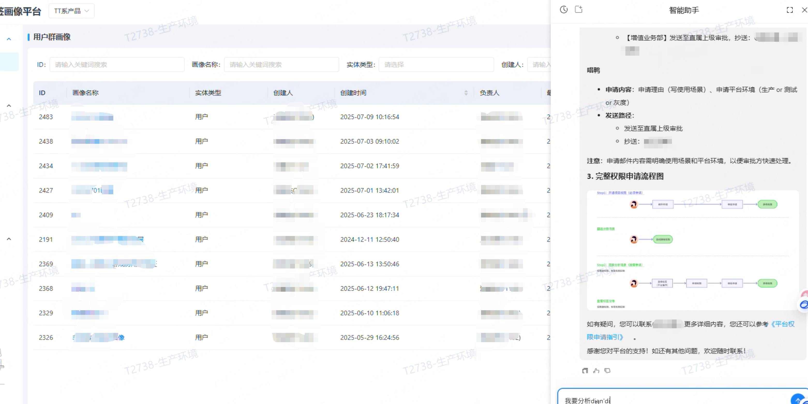
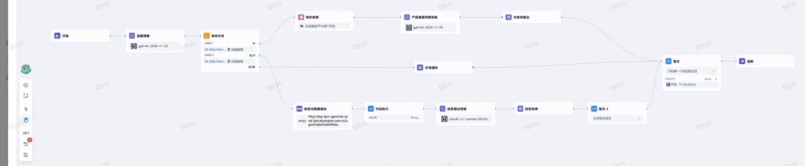

Workflow · 意图分流
将意图理解与条件分支分开组织：产品功能咨询进入知识检索和问答；标签咨询进入元数据获取与解释链路；其他问题进入引导提问，最终汇聚输出。
 WANG.
WANG.AGENT CREATION / 产品内嵌智能助手
在产品内嵌智能助手，通过意图路由连接操作知识与标签信息，帮助用户获取使用说明和业务解答。
场景定位
面向标签画像等 B 端产品用户，将智能助手嵌入业务页面。围绕产品操作、权限申请及标签咨询提供问答入口，让用户在当前工作场景中查找说明、理解流程。
设计重点
Workflow 截图展示了意图理解、条件分支、知识检索、接口调用、代码处理与结果聚合。不同问题进入相应链路，无法匹配时通过引导提问补充信息。
CORE CAPABILITIES
将意图理解与条件分支分开组织：产品功能咨询进入知识检索和问答；标签咨询进入元数据获取与解释链路；其他问题进入引导提问，最终汇聚输出。
以产品手册和操作说明支撑知识检索，为权限申请、使用流程等问题提供上下文。回复结合步骤、流程图片及参考入口，帮助用户继续操作。
将标签元数据查询等服务组织为可复用工具，并定义参数、返回结构和权限边界。当前截图展示 HTTP 接口调用，不能据此认定已使用 MCP；MCP 属于接入设计方向。
意图理解与产品问答节点显示 gpt-4o-2024-11-20，标签信息问答节点显示 Claude 3.7 Sonnet 系列。按分类、知识问答及结构化解释任务验证效果，具体选型结果需由评测支持。
重点验证代码处理、接口超时、空结果与异常返回，以及各分支输入输出的衔接。截图可见代码执行节点，具体沙箱隔离方式与限制尚未展示。
围绕意图命中、知识检索相关性、答案一致性、工具调用成功率和响应时延建立测试维度；覆盖功能咨询、标签咨询、追问及异常场景。本页不展示未提供的评测分数。
SERVICE FLOW
PRODUCT SCREENS

右侧助手在产品页面内提供操作指导，回复中呈现申请步骤、流程图和参考入口，减少在文档与业务页面间切换。

通过意图分支组织知识问答与标签咨询，连接检索、接口、代码执行和问答节点，再聚合为最终回复。